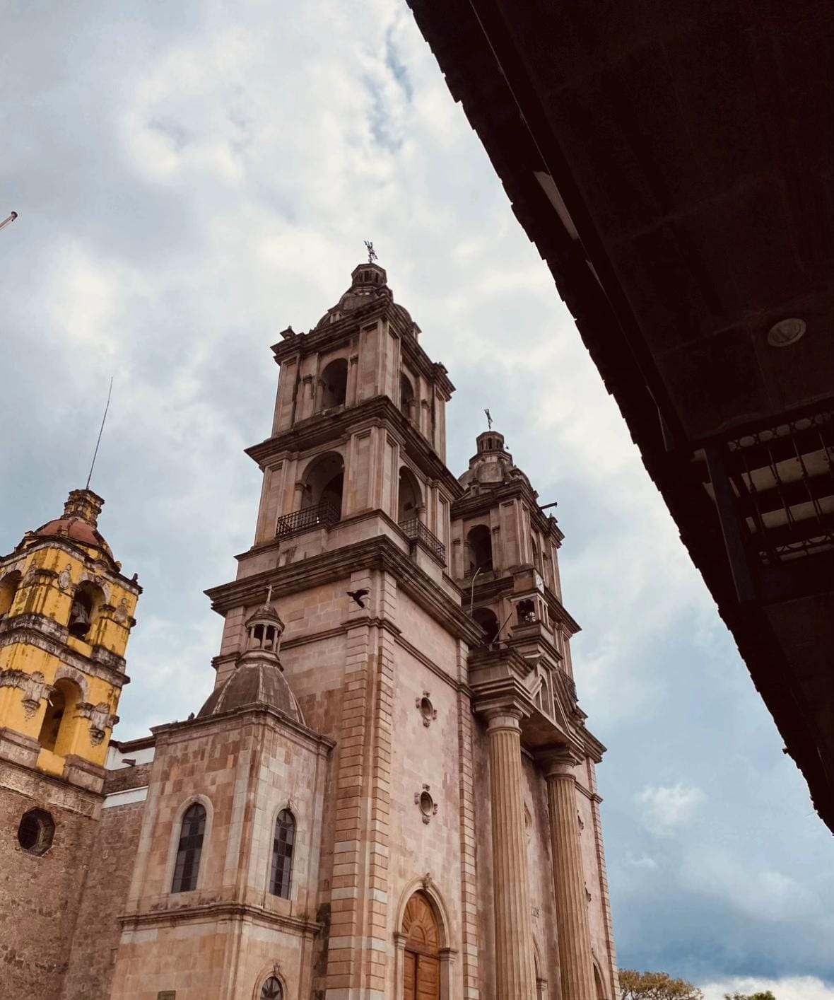

La Parroquia de San Francisco de Asís se encuentra registrada en el inventario de monumentos históricos inmuebles del Instituto Nacional de Antropología e Historia. Sus orígenes nos remontan al siglo XVI, pese a que ha sido modificada en distintas ocasiones. En los años cuarenta del siglo XX comenzó la construcción de las tres naves y las enormes columnas neoclásicas que flanquean la fachada. Cada 4 de octubre se celebra la fiesta en honor a san Francisco de Asís, patrono del templo; si tienes la oportunidad de visitarlo en esa fecha, podrás disfrutar del festejo que incluye mojigangas, fuegos artificiales, yuntas adornadas y una gran verbena popular. Visita el templo y admira su bella edificación. ¡No te arrepentirás!
El kiosco de Valle de Bravo es uno de los símbolos más fotografiados y queridos del pueblo, y está justo en el centro del Jardín Central, también conocido como la Plaza de los Tres Árboles. Es un kiosco tradicional de color blanco con detalles en rojo, con arcos, columnas y techo de teja, que combina perfectamente con la arquitectura colonial de todo el centro. Está rodeado de bancas, árboles grandes, flores, faroles y caminos de piedra, por eso es el punto donde todos se citan, se toman fotos y se sientan a descansa
En Valle de Bravo hay dos mercados muy importantes y cerquita del centro, que a veces se confunden. El primero es el Mercado Municipal Miguel Hidalgo y Costilla, que es el mercado de comida de todos los días. Ahí la gente del pueblo compra frutas, verduras, carne, tortillas, quesos, flores y antojitos típicos, y los visitantes pueden probar comida casera, barata y muy rica, como tamales, atole, tacos y dulces regionales. Abre todos los días de 7 de la mañana a 6 de la tarde. El segundo es el Mercado de Artesanías, ubicado sobre Avenida Juárez, que fue construido en 1984 para proteger y difundir el trabajo de los artesanos vallesanos.